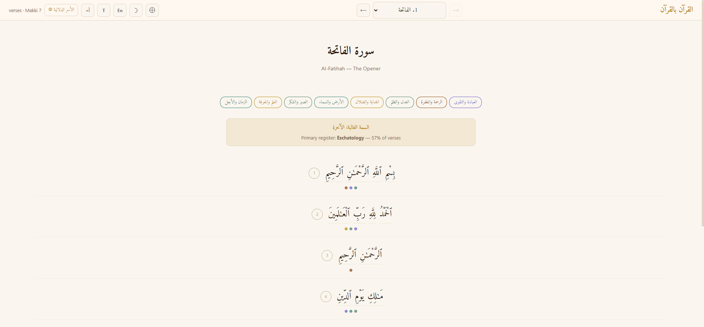
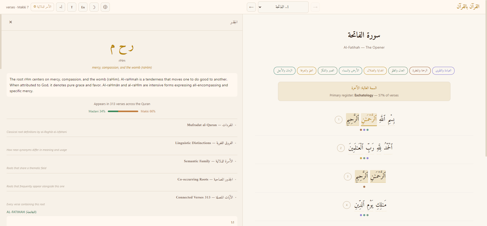
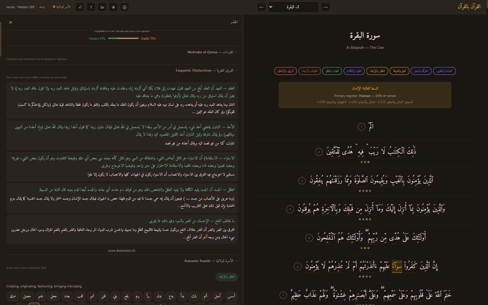
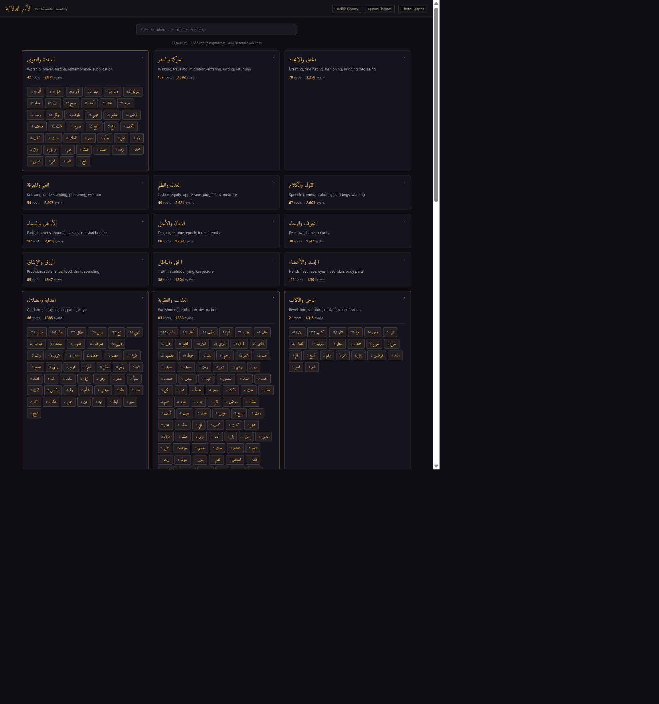
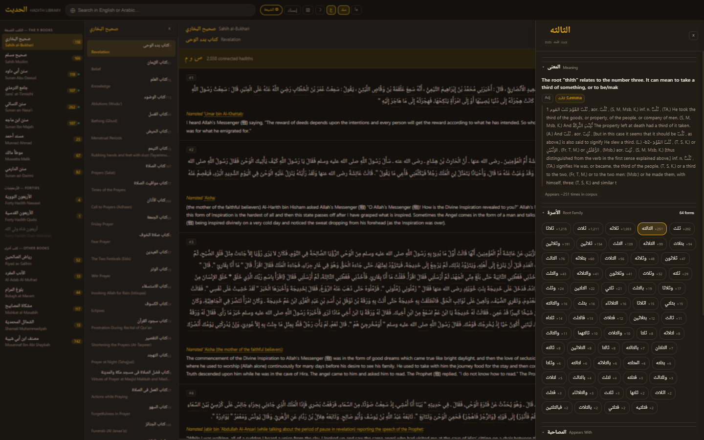
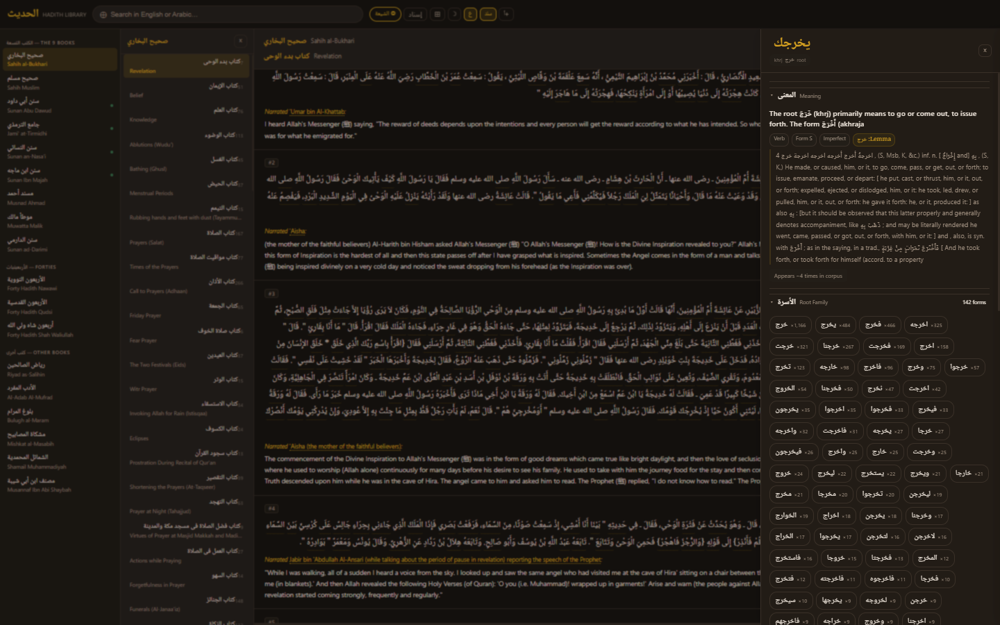

Start with the Quran. Every word is a doorway — hover to see its meaning, click to uncover its three-letter root, and follow that root through classical tafsir, thematic families, related verses, and into 112,000+ hadiths across 18 books.






When you connect 6,236 Quran verses to 112,000+ hadiths through 1,590 shared Arabic roots, patterns emerge that no manual reading could surface.
Meccan surahs use fewer, more concentrated roots — the same core vocabulary repeated with intensity. Medinan surahs expand into a broader vocabulary covering law, governance, and social contracts. The Quran's own linguistic structure shifts as its audience and purpose shift.
The thematic family for provision (rizq) overlaps most with body (hands, feet), travel, worship, and speech. The hadith corpus links sustenance to physical effort, movement, devotion, and what you say — not to passive waiting.
Each hadith collection has a thematic signature. Musannaf Ibn Abi Shaybah is heavy on fighting, inheritance, and wealth (fiqh rulings). Malik's Muwatta concentrates on purification and worship (Madinan practice). Bukhari is distinctive in knowledge and eschatology. The data confirms what scholars have said for centuries about each compiler's editorial intent.
Roots that are frequent in the Quran tend to be frequent in hadith — but with significant outliers. Some roots are far more prominent in hadith than their Quranic frequency would predict (practical, legal roots), while others are Quran-heavy but rare in hadith (cosmological, poetic roots). These divergences reveal the different registers of revelation vs. prophetic teaching.
Interactive tree diagrams of narrator transmission chains — see how hadith knowledge flowed from the Prophet through generations of scholars.
Explore →Three views: thematic family overlaps, book distinctiveness (which books specialize in which themes), and narrator-book distributions.
Explore →Full-text search in English or Arabic across all 18 books. Also works as a direct entry point — find a hadith, click a word, and enter the root discovery flow.
Search →A parallel collection with the same interactive Arabic text and root-click functionality, covering the major Shia hadith compilations.
Explore →Itqan builds on and extends three open-source projects. Full technical details in the GitHub README.
Isnad visualization concept and Sankey data model. Itqan extends it from Bukhari-only to 11 books with D3, narrator grading, and interactive controls.
FAISS semantic search concept. Itqan upgrades from 15k hadiths to 112k, swaps the English-only model for multilingual-e5-small (Arabic-native), and adds root family tagging.
RAG conversational Q&A with isnad-preserving retrieval. Itqan replaces GPT with open-source Qwen2.5, adds multi-turn, deduplication, and source grounding.
The source projects provided concepts. Everything below was built from scratch and has no precedent in any open-source Islamic studies tool.
1,590 shared Arabic roots connecting 6,236 ayahs to 112,000+ hadiths through 1,528,346 verified links. Click a root in the Quran, see every hadith across 18 books. No existing tool does this.
Roots grouped by semantic field from classical lexicography (al-Raghib al-Isfahani). Mercy, justice, prayer, trade, eschatology — each family spans both Quran and Hadith.
33,758 Arabic words across 112k hadiths, each mapped to its root, Lane’s Lexicon definition, and grammatical form. Click any word in any hadith for instant analysis.
115,735 narrator profiles parsed from 22 classical texts of hadith scholarship (Tahdhib al-Kamal, Mizan al-I’tidal, Al-Jarh wa al-Ta’dil, Al-Thiqat, and more). 217,762 name variants, 31,822 classical source cross-references. Multi-scholar comparison that previously required consulting several physical volumes — in one JSON file.
A full Mu’jam al-Mufahris (1.15M word×hadith entries), three interactive chord diagrams with interpretive annotations, and a visual discovery guide — all new.